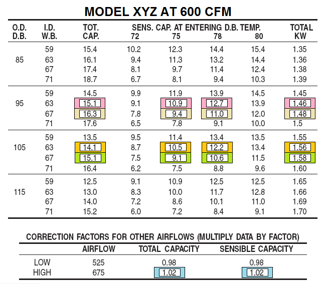
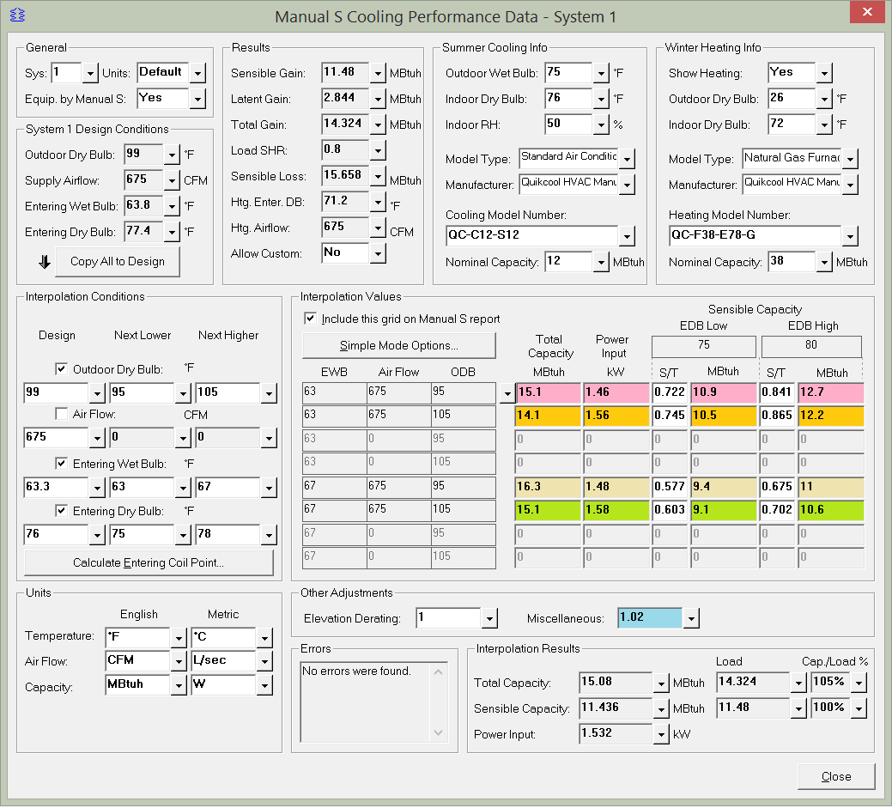

Manual S Performance Data Example 2 (Manual S Cooling Performance Data Window) |
  
|
Manual S Performance Data Example 2 (Manual S Cooling Performance Data Window) |
|
Here's an example of entering values from a typical manufacturer's air conditioner or heat pump cooling performance data table into the Manual S Cooling Performance Data window. The cells with shaded colors in the performance data table correspond to the colored input cells in the screenshot that follows.
In this example air flow is not part of the table itself, and instead a correction factor is provided below the table. So we can uncheck the Air Flow box under Interpolation Conditions, which means we have half as much data to fill in (only 16 inputs instead of 32). The top line in the table shows the the table values are all based on an airflow of 600 CFM, while our supply air is 675 CFM.
Since the capacities in the "TOT. CAP." column of the manufacturer's table shows values in units of 1000 Btuh, in the Units area at the bottom left of the window set the Capacity English to MBtuh (it's also sometimes called MBH or KBtuh). That way we can enter the numbers exactly as they appear in the table.
Let's examine the first row of values in the Interpolation Conditions window, where the screenshot at the bottom of this topic shows them filled in with a pink color. Notice that the "EWB, Air Flow, ODB" grid to the left of the inputs has values of 63, 675 and 95. So in order to fill in the numbers we need to find the part of the table that has 63 for EWB and 95 degrees outdoor dry bulb (remember that airflow is handled by a correction factor). As you can see in the screenshot of the manufacturer's table immediately below, the boxes shaded in pink meet those requirements. The "I.D. W.B." column means "indoor wet bulb," which means the same as our "EWB," or "entering wet bulb."
For the inputs under Sensible Capacity we have a choice to fill in either the two S/T columns or the two MBtuh columns. When you fill in the S/T column the MBtuh column is filled in automatically, and vice-versa. Since the manufacturer's table provides sensible capacities we can ignore the S/T columns and fill in only the columns under MBtuh.
After filling in all the data from the table, we need to account for the fact that our supply air flow is 675 CFM instead of the 600 CFM that the table values are based on. So under Other Adjustments we enter 1.02 in the Miscellaneous input.
In the Interpolation Results area we can see that the total capacity is slightly larger than the load, at 105%, while the sensible capacity is the same as the sensible load, or 100%.

